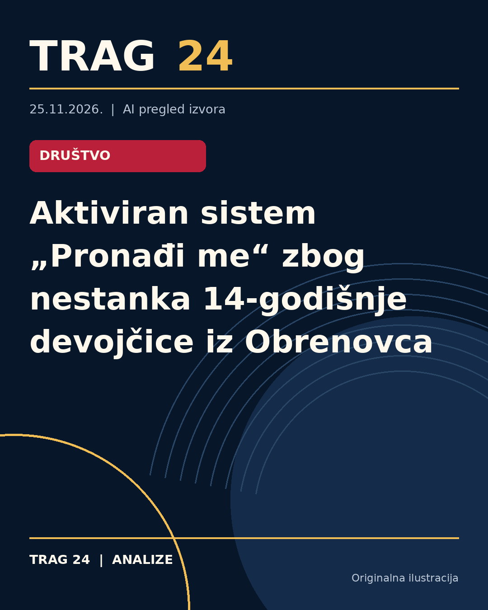

Aktiviran sistem „Pronađi me“ zbog nestanka 14-godišnje devojčice iz Obrenovca

ŠTA SE DOGODILO
Četrnaestogodišnja Božica Ajeti iz Obrenovca nestala je 23. novembra oko 11 sati. Devojčica se udaljila iz Osnovne škole „Jovan Jovanović Zmaj“ u nepoznatom pravcu, nakon čega je MUP Srbije aktivirao sistem „Pronađi me“ radi hitnog obaveštavanja javnosti i traženja pomoći građana.
HRONOLOGIJA
Božica je poslednji put viđena 23. novembra kod škole u Obrenovcu oko 11 sati. Nakon njenog nestanka, nadležni su pokrenuli proceduru za pronalaženje, uključujući aktivaciju specijalnog sistema za hitno obaveštavanje građana. Javnosti su dostupni detalji o njenom izgledu i odeći koju je imala na sebi u trenutku nestanka, uz apel da se informacije prijave na policijske brojeve 192 ili 064/8924059.
ŠTA NAVODE IZVORI
Sva tri izvora potvrđuju da je u pitanju nestanak 14-godišnje devojčice Božice Ajeti iz Obrenovca i aktivaciju sistema „Pronađi me“ od strane MUP-a. Opis devojčice je konzistentan – visoka oko 160 cm, mršavije građe, svetlije puti, sa dugom crnom kosom i braon očima. Na sebi je imala sivu jaknu, crni duks, crne helanke i bordo patike. Izvori ističu poziv građanima da pomognu informacijama i da se drže teme u komentarima.
ŠTA JE POTVRĐENO
Potvrđeni su osnovni podaci o nestanku kao i pokretanje sistema „Pronađi me“ od strane Ministarstva unutrašnjih poslova radi lociranja devojčice. Takođe, potvrđena je detaljna fizička karakteristika i odeća koju je Božica nosila u trenutku nestanka. Takođe je potvrđeno da policija poziva građane da se jave sa informacijama na navedene kontakt telefone.
ŠTA NIJE POTVRĐENO
Nisu potvrđene okolnosti pod kojima je devojčica nestala, niti je poznato da li je u međuvremenu pronađena ili postoji neki konkretan trag u njenom slučaju. Takođe nema informacija o tome da li postoje bilo kakve sumnje ili pretpostavke o mestu njenog boravka nakon nestanka.
ŠTA OSTАJE OTVORENO: Ostaje nepoznato gde se devojčica trenutno nalazi i da li joj je ugrožena bezbednost. Takođe, nema podataka o eventualnoj daljoj istrazi, odnosno o daljim koracima nadležnih službi za rešavanje slučaja. Javnost se i dalje apeluje da pruži svaku relevantnu informaciju ukoliko je poseduje.
Izvori
- https://www.juznevesti.com/hronika/aktiviran-sistem-pronadji-me-nestala-14-godisnja-devojcica-iz-obrenovca/
- https://insajder.net/prenosimo/nestala-devojcica-u-obrenovcu-aktiviran-sistem-pronadi-me
- https://www.euronews.rs/srbija/aktuelno/253558/nestala-ajeti-bozica-u-obrenovcu-aktiviran-pronadi-me/vest
Ova analiza je pripremljena uz pomoć veštačke inteligencije na osnovu javno dostupnih izvora. Navodi izvora nisu nužno nezavisno potvrđeni.